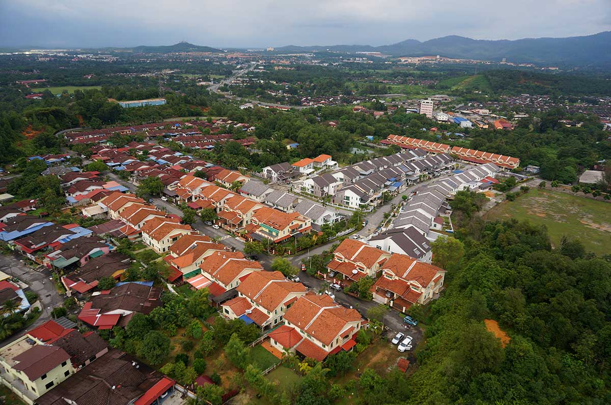

Hometown
TAMAN JATI, KULIM KEDAH
This is where I live and place here in Taman Jati Kulim Kedah. The Kulim District is a district and town in the state of Kedah, Malaysia. It is located on the southeast of Kedah, bordering Penang. The town of Kulim, a mere 27 km (17 mi) east of Penang's capital city, George Town, also forms part of Greater Penang, Malaysia's second largest conurbation.
PARIT BUNTAR, PERAK
This is where my mother's hometown is here in Sungai Kota, Parit Buntar Perak. Parit Buntar is a town in Kerian District, Perak, Malaysia. It is bordering to Nibong Tebal in Penang and Bandar Baharu in Kedah.It is also the district capital of Kerian District. This district is known as the Rice Bowl of Perak due to its large areas of paddy fields. Irrigation system has been built to reclaim the areas and to control the water flow into and out of the paddy fields.
KOTA BHARU, KELANTAN
This is where my father's hometown is here in Kota Bharu, Kelantan. Kota Bharu, colloquially referred to as KB, is a town in Malaysia that serves as the state capital and royal seat of Kelantan. It is situated in the northeastern part of Peninsular Malaysia and lies near the mouth of the Kelantan River. The town is home to many mosques, various museums, the unique architecture of the old royal palaces (still occupied by the sultan and sultanah and off-limits to visitors but viewable from outside) and former royal buildings (which can be visited).